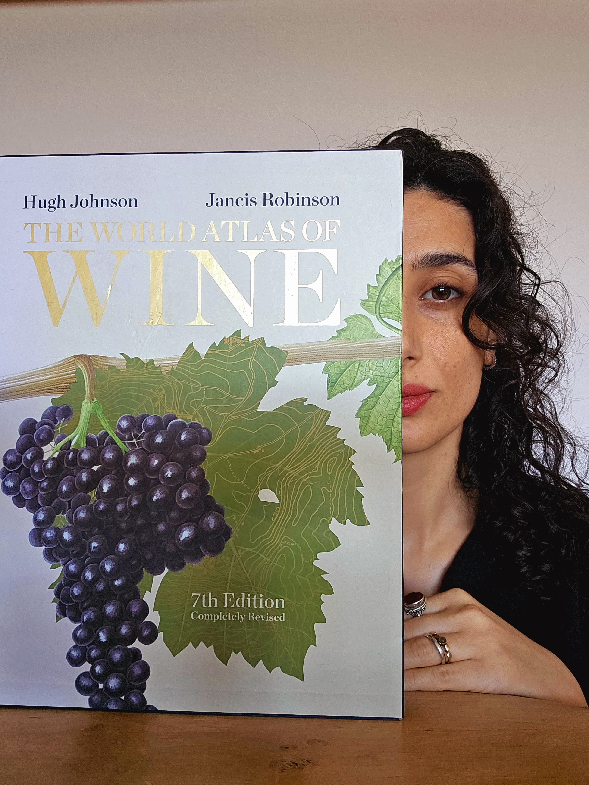

sukaleyan

Welcome to my little digital corner.
This is where I keep track of myself — someone who's mostly all over the place. One thing holds it all together, though: wine. Not as a drink, but as history, culture, imagery, and art.
Everything here grows from the vine.
It all started with a tiny vineyard that fell into my life by accident. There was something about the plants — as mysterious as the final product. The vines were so beautiful, I couldn't stop looking at them. I wasn't sure what I was feeling, but it was strong.
I needed to learn. I started digging into books, going to wine festivals, researching online, following Masters of Wine on social media, getting on mailing lists of wine publications. After trying all of this, I found my own way in: through art history, the thing I already knew.
Now I look for wine everywhere — not in glasses, but in visual and material culture. In architectural details, museums, public spaces, libraries. I collect what I find in an ever-growing archive. Based on my findings, I'm developing an app called Spot the Wine to invite others to explore these traces with me.
All of this lives under Runic Grapes — where I collaborate with artists inspired by wine, research its art historical context, and curate objects in which wine and its world are embedded.
I also create work myself — yes, wine again. And I still tend that tiny vineyard in Württemberg.
I told you, I'm all over the place. But just like a vine, I climb on anything.